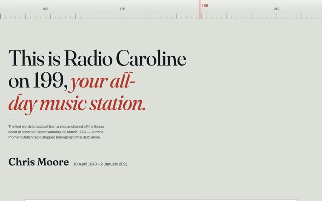
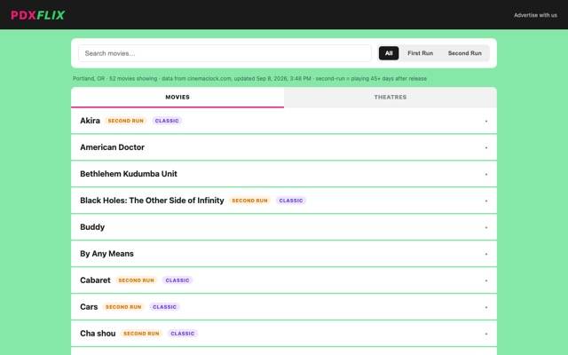
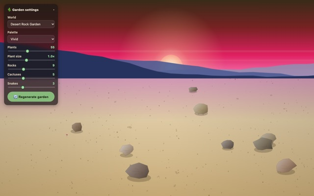
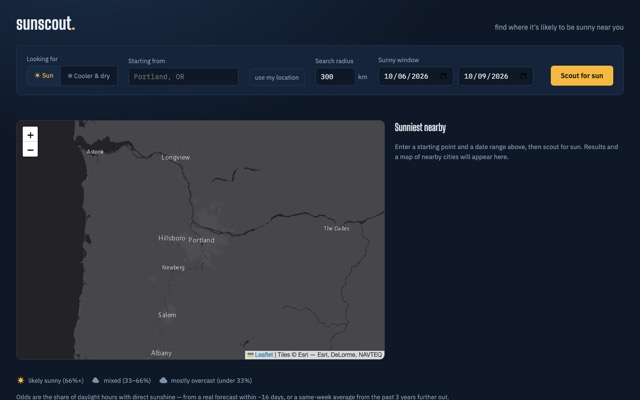
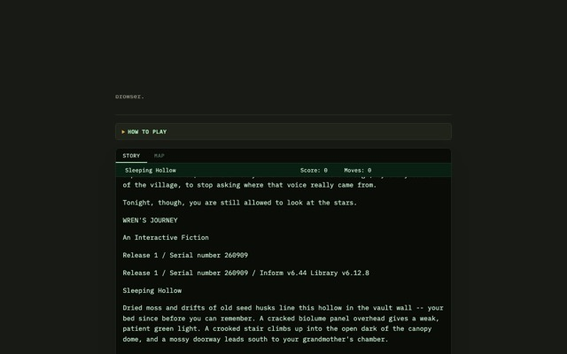

Jason Frinchaboy's AI Apps
A handful of small web projects, each built with an AI coding assistant. Click any card to try it out.
-

Chris Moore, 1940–2021
A tribute to the co-founder of Radio Caroline and the first voice heard on British offshore radio, with a place to share memories of him.
Visit -

PDXFlix
Movie showtimes for theaters around Portland, Oregon, all in one place.
Visit -
Scrub Piano
A full 88-key piano in the browser, with a scrub slider, scales, instruments, and drone chords.
Visit -

succs4u
Grow your own desert rock garden. Choose a world and palette, then dial in the plants, rocks, cacti, and snakes.
Visit -

Sunscout
Pick a starting point and some dates, and Sunscout maps where it's most likely to be sunny nearby.
Visit -

Wren's Journey
Interactive fiction: an albino orphan, a borrowed father's voice on a dying cassette tape, and a wall no one has opened in five hundred years.
Visit -
TourMatch
Describe your trip in plain language. TourMatch searches tour marketplaces and ranks the local guides that fit.
Visit